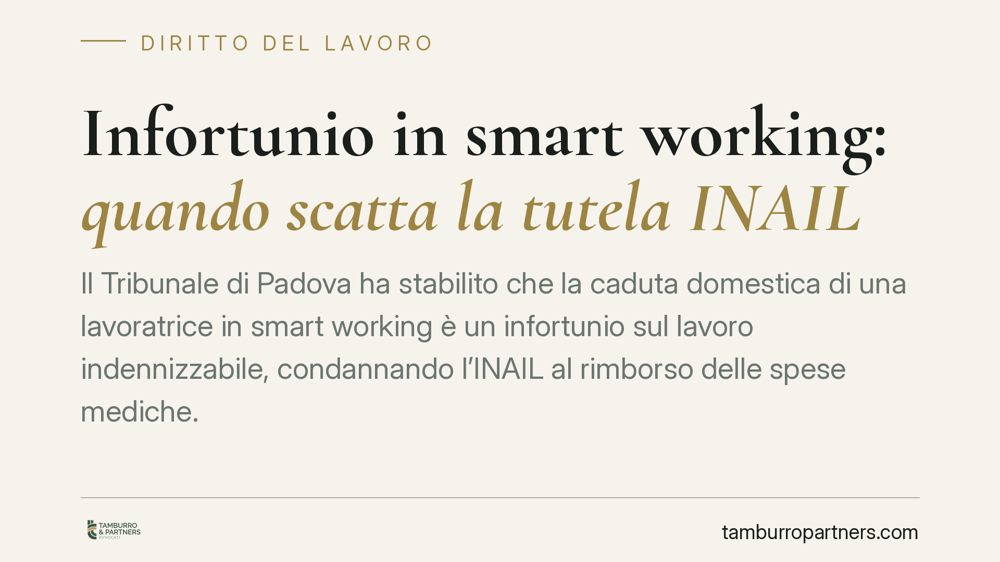

Infortunio in smart working: quando scatta la tutela INAIL
Il Tribunale di Padova ha stabilito che la caduta domestica di una lavoratrice in smart working è un infortunio sul lavoro indennizzabile, condannando l'INAIL al rimborso delle spese mediche. La pronuncia chiarisce fino a che punto la copertura assicurativa segue il dipendente quando la prestazione si svolge tra le mura di casa.

Il caso
Una dipendente dell'Università di Padova, mentre lavorava in modalità agile dalla propria abitazione, subisce una caduta domestica. L'INAIL nega inizialmente l'indennizzo. La lavoratrice, assistita dal sindacato Fgu Gilda Unams, si rivolge al Tribunale di Padova, che le dà ragione: l'infortunio è riconosciuto come infortunio sul lavoro e l'Istituto viene condannato al rimborso delle spese mediche anticipate.
La decisione non introduce una regola nuova, ma applica con coerenza i principi già previsti dalla legge sul lavoro agile. Il suo valore sta nel chiarire quando la tutela assicurativa opera anche fuori dai locali aziendali.
Inquadramento normativo
Il riferimento è l'art. 23 della Legge 81/2017, che disciplina il cosiddetto lavoro agile (smart working). La norma stabilisce che il lavoratore agile ha diritto alla tutela contro gli infortuni sul lavoro e le malattie professionali anche per le prestazioni rese all'esterno dei locali aziendali.
La copertura non è però illimitata. L'infortunio è indennizzabile quando ricorre il requisito dell'occasione di lavoro: deve esistere un nesso, anche indiretto, tra l'evento e l'attività lavorativa. In altri termini, il rischio deve essere riconducibile allo svolgimento della prestazione, non a una scelta del tutto estranea e personale del lavoratore.
È qui che il giudice compie la valutazione più delicata. Nel lavoro agile il confine tra sfera professionale e sfera privata è fisicamente sfumato: l'abitazione è al tempo stesso luogo di vita e luogo di lavoro. La giurisprudenza, come conferma il Tribunale di Padova, tende a riconoscere la tutela quando l'attività svolta al momento dell'infortunio risulta funzionale alla prestazione o rientra nelle normali esigenze connesse al suo svolgimento.
Implicazioni pratiche
Per il lavoratore, la pronuncia conferma che svolgere la prestazione da casa non comporta una riduzione delle tutele: la copertura INAIL segue il dipendente anche nel domicilio, purché l'evento sia collegato all'attività.
Per il datore di lavoro, il tema si sposta sul piano della prova e dell'organizzazione. Diventa rilevante poter ricostruire cosa stesse facendo il dipendente e in quale fascia oraria. L'accordo individuale di lavoro agile e l'eventuale regolamentazione interna assumono un peso concreto: definire orari, pause e modalità di esecuzione aiuta a delimitare l'occasione di lavoro.
Resta centrale la distinzione tra l'infortunio avvenuto durante la prestazione e quello verificatosi in un momento di pura attività privata. Non ogni incidente domestico è indennizzabile: lo è quello che mantiene un collegamento con il lavoro. La valutazione è caso per caso e dipende dalla concreta ricostruzione dei fatti.
Un ulteriore profilo riguarda il cosiddetto infortunio in itinere, che nel lavoro agile può ricorrere, ad esempio, negli spostamenti verso un luogo diverso concordato per la prestazione. Anche in questi casi la tutela esiste entro limiti precisi, legati alla ragionevolezza e alla necessità del percorso.
Cosa fare in concreto
- Formalizzate l'accordo di smart working indicando orari, fasce di reperibilità e modalità di svolgimento della prestazione: definiscono l'ambito entro cui opera la tutela.
- Documentate le circostanze dell'infortunio il prima possibile: ora, attività in corso, luogo. La ricostruzione dei fatti è decisiva per il riconoscimento.
- Comunicate tempestivamente l'evento al datore di lavoro e verificate l'inoltro della denuncia all'INAIL nei termini di legge.
- Conservate la documentazione sanitaria e le ricevute delle spese mediche anticipate, in vista di un'eventuale richiesta di rimborso.
- Valutate la posizione con un professionista in caso di diniego dell'Istituto: il contenzioso, come dimostra il caso padovano, può portare al riconoscimento della tutela.
La pronuncia del Tribunale di Padova conferma una tendenza: il lavoro agile non attenua le garanzie, ma richiede maggiore attenzione nella definizione degli accordi e nella documentazione degli eventi. Per datori e lavoratori, la prevenzione del contenzioso passa dalla chiarezza delle regole concordate.
---
*Contributo informativo a cura di Tamburro & Partners - Avv. Giuseppe Tamburro. Non costituisce parere legale.*
Ogni storia di lavoro ha i suoi tempi.
Se gestisci HR e vuoi un confronto su contenzioso, ispezioni o licenziamenti, scrivi allo studio. Ti rispondiamo entro un giorno lavorativo.